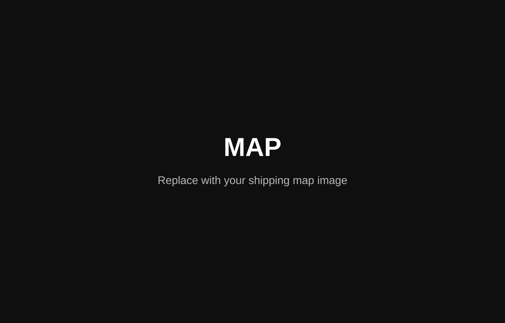

今日风险指数
53
按昨日上升 15
按昨日上升 15
中等风险
较昨日上升 5
无风险
较昨日下降 45
低等风险
较昨日下降 26
高等风险
较昨日上升 35
中等风险
较昨日上升 5
低等风险
较昨日下降 45
无风险
较昨日下降 45
检测结果：苏伊士运河航段 AIS 拥堵指数较昨日上升 +32%，目的港（鹿特丹）平均靠泊等待时长增加至 9.6 小时。
影响评估：若维持原航线 “CNSHA → SGSIN → SUZ → NLRTM”，预计到港时间将延迟 6-12 小时，可能影响后续班期衔接。
1) 优先使用备选航线 “CNSHA → SGSIN → Good Hope → NLRTM”，避开拥堵海域；
2) 即时向鹿特丹港代理确认最新靠泊窗口，动态调整靠泊序；
3) 若预计延迟超过 6 小时，启动班期级联调整；
4) 后续航次控制即期货盘投入比例 ≤ 35%，保持运力灵活。
当前红海一苏伊士上游区域航道仍处于中断。AIS 航迹密度较上周上升 18%，荷塘曲线从结构性离散向阶段性堆积。
同期海况出现短时扰动，风力 6-7 级、浪高 2.8-4.3m，部分船舶航速下降 0.9-1.7 kn。
航路通行效率受限，预计本航段产生 4-10 小时航次偏移；对后续班期衔接形成延迟压力，气象系统扰动将使航速恢复和靠港序调整成为关键影响因素。
当前拥堵属于短周期堆积、非结构性阻塞。拥堵表观将取决于：
维持原航运执行
提前确认港口窗口，避免阶段性后移
维持原航运执行
提前确认港口窗口，避免阶段性后移
维持原航运执行
提前确认港口窗口，避免阶段性后移
当前为中等偏上通行风险区间，建议在未来 6 小时重点跟踪 AIS 密度、风力等级及目的港窗口变化情况。如触发阈值条件，系统将自动推送航线调整指引。
